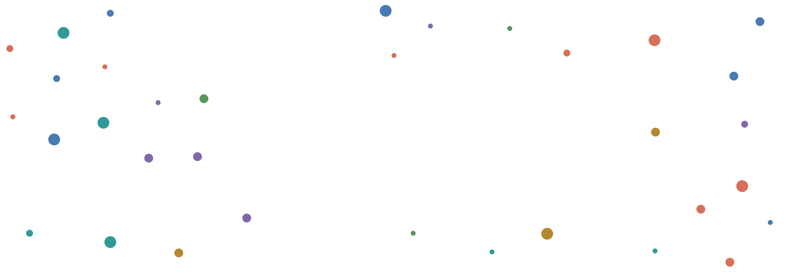
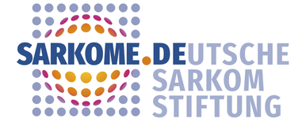

Predict PGx phenotypes
Combine germline and somatic variants with tumour multiomics data to predict drug response and toxicity, including the impact of rare variants.

Implementation of pharmacogenomics (PGx) into molecular tumour boards in Europe
Molecular tumour boards recommend targeted therapies based on the molecular profile of a tumour. PGxMTB is the first EU project to systematically integrate pharmacogenomics into these decisions, so that inherited and tumour-specific variation in drug metabolism and drug targets is taken into account.
How well a patient tolerates and responds to a cancer drug depends on genes that govern drug absorption, distribution, metabolism and excretion (ADME) and on drug targets – the field of pharmacogenomics (PGx). This information is rarely considered in molecular tumour board decisions today.
Building on germline and tumour multiomics data from the precision oncology programmes DKFZ/NCT/DKTK MASTER and MAPPYACTS1/2, the consortium develops a PGx pipeline covering more than 300 pharmacogenes, validates it in adult and paediatric cohorts, explores liver-derived extracellular vesicles as a liquid biopsy of hepatic drug metabolism, and prepares clinical implementation together with patient representatives.
Combine germline and somatic variants with tumour multiomics data to predict drug response and toxicity, including the impact of rare variants.
Confirm functional variants experimentally and validate PGx and drug-target signatures in adult and paediatric cancer patients.
Use liver-derived extracellular vesicles as a minimally invasive liquid biopsy to capture hepatic drug metabolism in patients with cancer.
Establish a framework for PGx reporting in molecular tumour boards in Heidelberg and Paris, and train healthcare providers.
Engage patient representatives as research partners and develop materials that help patients understand PGx.
Assess the health-economic impact of implementing PGx in molecular tumour boards across European health systems.
Refinement of a PGx pipeline for prediction of PGx phenotypes and drug targets in cancer patients, complemented by multiomics data in MASTER.
Assessment of the functional impact of rare pharmacogenetic variation.
Validation of multiomics data of pharmacogenes from MASTER in RATIONALE and extension to a paediatric and adolescent population from MAPPYACTS1/2.
Elucidation of hepatic PGx phenotypes of cancer patients using liver-derived extracellular vesicles to assess the impact of tumours.
Development of an implementation approach for PGx information in MTBs and involvement of patient participation.
Health economic (HE) evaluation of the PGx implementation in molecular tumour boards.
Lead: UMIT TIROLSix partners from Germany, Sweden, France and Austria, including a patient organisation.
PIs: Matthias Schwab, Roman Tremmel
WebsitePIs: Stefan Fröhling, Daniel Hübschmann
WebsitePI: Volker Lauschke
WebsitePI: Birgit Geoerger
Website
PI: Markus Wartenberg
WebsitePI: Beate Jahn
WebsiteAll partners met for a PGxMTB consortium meeting to present the progress of the work packages and discuss data management, governance and the project timeline.
The first EU project to integrate pharmacogenomics into molecular tumour boards has started its three-year funding period under EP PerMed.
Interested in PGxMTB, our data or a collaboration? Contact the project coordination team.
Prof. Dr. Matthias SchwabPGxMTB is funded under the frame of EP PerMed (Grant Agreement No. 101137129), which has received funding from the European Union's Horizon Europe research and innovation programme, and by the participating national funding organisations. Views and opinions expressed are those of the authors only and do not necessarily reflect those of the European Union or the granting authorities.
About EP PerMed